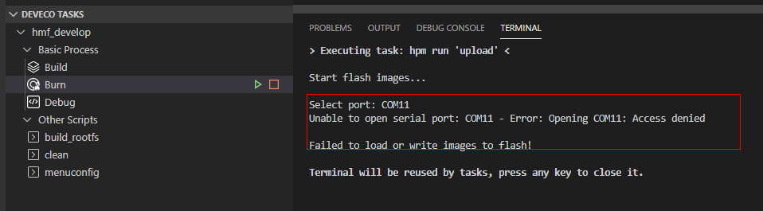
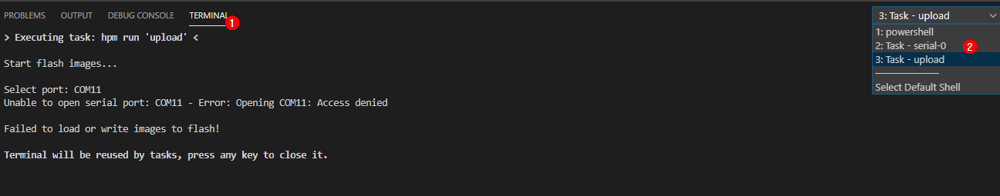
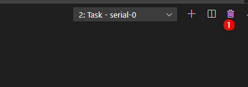
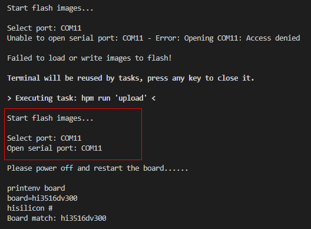
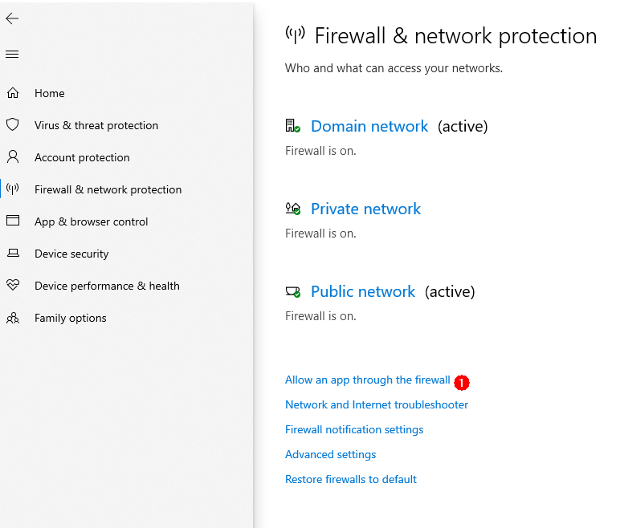
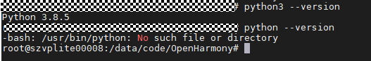

FAQs¶
What should I do when the images failed to be burnt over the selected serial port?
Symptom
Error: Opening COMxx: Access denied is displayed after clicking Burn and selecting a serial port.
Figure 1 Failed to open the serial portPossible Causes
The serial port has been used.
Solutions
Search for the terminal using serial-xx from the drop-down list in the TERMINAL panel.
Figure 2 Checking whether the serial port is usedClick the dustbin icon as shown in the following figure to disable the terminal using the serial port.
Figure 3 Disabling the terminal using the serial portClick Burn, select the serial port, and start burning images again.
Figure 4 Restarting burningWhat should I do when Windows-based PC failed to be connected to the board?
Symptom
The file image cannot be obtained after clicking Burn and selecting a serial port.
Figure 5 Failed to obtain the image file due to unavailable connection
Possible Causes
The board is disconnected from the Windows-based PC.
Windows Firewall does not allow Visual Studio Code to access the network.
Solutions
Check whether the network cable is properly connected.
Click Windows Firewall.
Figure 6 Network and firewall setting
Click Firewall & network protection, and on the displayed page, click Allow applications to communicate through Windows Firewall.
Figure 7 Firewall and network protectionSelect the Visual Studio Code application
Figure 8 Selecting the Visual Studio Code application
Select the Private and Public network access rights for the Visual Studio Code application.
Figure 9 Allowing the Visual Studio Code application to access the network
What should I do when the image failed to be burnt?
Symptom
The burning status is not displayed after clicking Burn and selecting a serial port.
Possible Causes
The IDE is not restarted after the DevEco plug-in is installed.
Solutions
Restart the IDE.
What should I do when the message indicating Python cannot be found is displayed during compilation and building?
Symptom

Possible Cause 1: Python is not installed.
Solutions
Install the Python environment by referring to Installing a Python Environment.
Possible Cause 2:The soft link that points to the Python does not exist in the usr/bin directory.

Solutions
Run the following commands:
# cd /usr/bin/ # which python3 # ln -s /usr/local/bin/python3 python # python --version
Example:

What should I do when no command output is displayed?
Symptom
The serial port shows that the connection has been established. After the board is restarted, nothing is displayed when you press Enter.
Possible Cause 1
The serial port is connected incorrectly.
Solutions
Change the serial port number.
Start Device Manager to check whether the serial port connected to the board is the same as that connected to the terminal device. If not, perform the following steps to change the serial port number.
Figure 10 Procedure for changing the serial port number
Disconnect from the current serial port.
Click Settings.
Change the serial port number in the dialog box and click OK.
Press Enter in the dialog box to check whether any command output is displayed after the connection is established.
Possible Cause 2
The U-boot of the board is damaged.
Solutions
Burn the U-boot.
If the fault persists after you perform the preceding operations, the U-boot of the board may be damaged. You can burn the U-boot by performing the following steps:
Obtain the U-boot file.
 NOTICE: The U-boot file of the board can be obtained
from
vendorhisihi35xxhi3516dv300ubootoutbootu-boot-hi3516dv300.bin
in the open-source package.
NOTICE: The U-boot file of the board can be obtained
from
vendorhisihi35xxhi3516dv300ubootoutbootu-boot-hi3516dv300.bin
in the open-source package.Use HiTool to burn the U-boot.
Figure 11 Procedure for burning the U-boot using HiTool

Select the COM7 serial port.
Select Serial for Transfer Mode.
Select Burn Fastboot.
Select spi nor for Flash Type.
Click Browse and select the corresponding U-boot file.
Click Burn to start burning.
Power off the board and then power it on. Connect the serial port after the burning is complete. Serial ports shown in the following figure are displayed after the U-boot is burnt.
Figure 12 Serial port displayed after the U-boot is burnt